-
懷孕是女人一生的大事，不只是因為即將迎接新生命的到來，更重要的是，準媽咪必須更小心照顧自己，同時保護寶寶的健康。
因此，懷孕期間準媽咪除了要關注每日的飲食營養攝取，預防疾病避免感染腹中胎兒之外，產後的照護也不容忽視，才能讓孩子平安出生，媽媽也能健康的陪著寶寶長大。

- 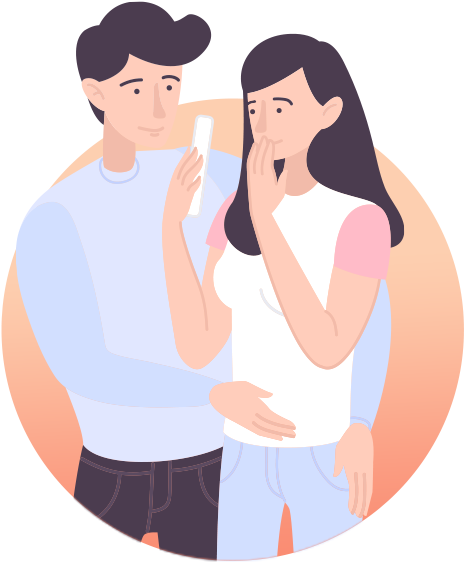
- 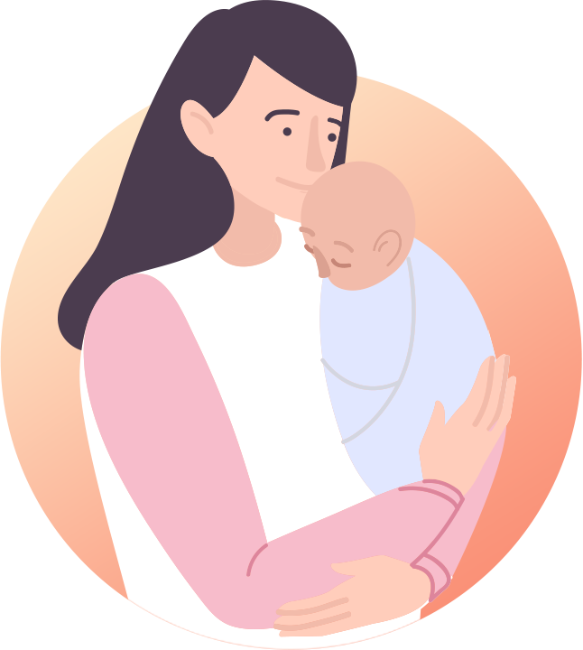
- 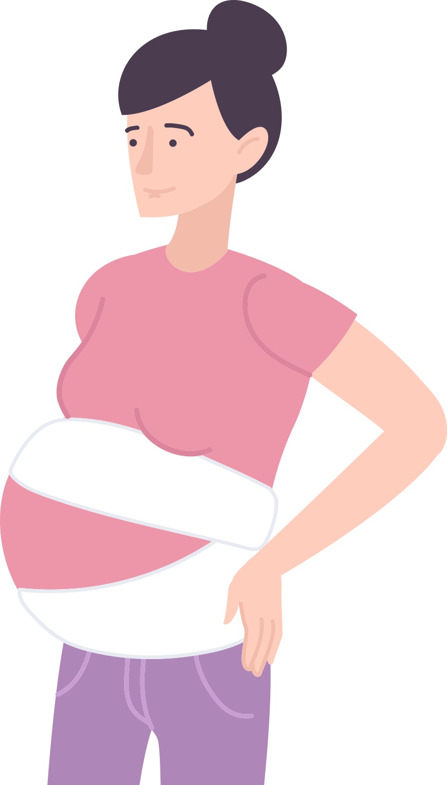
孕期間的媽咪做了各式各樣的檢查與產撿，目的是讓小朋友安全又健康，新手媽媽還特別需要注意哪些地方呢？
-
Youtuber彥婷x巨人
-

禾馨醫療 婦產科許峻睿醫師
【百日咳不止成年人會得，新生兒更要注意！？】
每年都有新生兒得到百日咳而併發重症，但鮮少人真正了解百日咳的嚴重性。 孕媽咪該如何在孕期間超前部署，保護寶寶呢？
-
Youtuber陳彥婷
-
禾馨民權婦幼醫院許峻睿醫師
【懷孕知識補給站】男女都該看！生小孩到底要花多少錢？自費產檢這麼多有需要嗎？(假字)
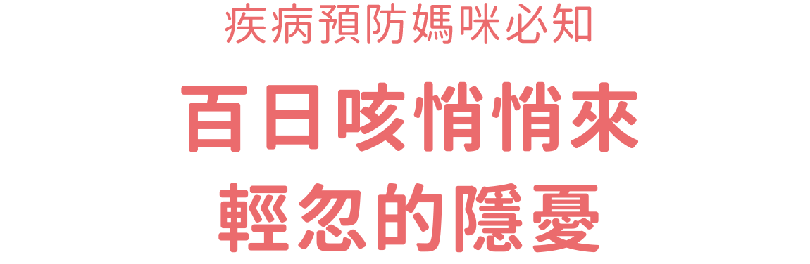
準媽咪的身體健康影響著胎兒安全，特別在疾病預防方面，自我保護越徹底，寶寶就能擁有更大的保障。談到疾病預防，提醒準媽咪，要特別小心百日咳的感染威脅，因為百日咳初期症狀和感冒很類似，準媽咪很容易因此而輕忽，錯失治療讓寶寶處於危險之中。
-
不分季節、年齡，隨時都可能感染
百日咳是一種呼吸道細菌感染的法定傳染疾病，不僅具有高度傳染力，且沒有流行季節、不分年齡、地區，全球各地每月都有病例發生。任何人都有可能因此受感染。
主要感染途徑，是經由染病帶菌者，透過咳嗽、打噴嚏時的飛沫傳染造成。當準媽咪不知不覺感染百日咳，不僅可能引發肺炎等嚴重併發症，同時會造成胎兒成長的安全疑慮。
更令人擔憂的是，寶寶出生0至2個月，在尚未接種疫苗的空窗期、免疫力較弱時，百日咳對寶寶健康威脅更大。 -
是感冒還是百日咳？就醫診療最安心
其實，百日咳最棘手是感染後不易察覺，因為一開始發病的症狀，包括︰流鼻水、鼻塞、打噴嚏、發燒及輕微咳嗽等，都與普通感冒非常相似、難以區分。因此，許多人在感染後，以為小感冒往往不以為意，未及時就醫治療導致健康陷入危機。準媽咪一定要特別注意，當你連續兩週不停咳嗽，且出現陣發性咳嗽、發出吸入性哮喘聲或咳嗽後有嘔吐現象時，就必須提高警覺，可能已經感染了百日咳，並且盡快接受醫師診療，對寶寶的健康威脅降到最低。
寶寶在出生後六個月內是百日咳的重症高危險群，當寶寶感染百日咳，會發生很強烈的連續咳嗽，並且常常合併臉部漲紅、嘔吐現象，可能引起呼吸中止、肺炎、癲癇、腦病變或因持續性嘔吐導致營養失調，媽媽不可不當心！ -
家人是百日咳傳播高危險群
在台灣絕大部分的成年人在幼兒時期皆已接種百日咳疫苗，但其實疫苗的免疫效力，在3-5年之後即開始降低，而且僅約可維持5～10年。疫苗完成接種12年後，可能完全偵測不出抗體。因此，青少年及成年人都有可能因失去抵抗力而遭受感染，成為家裡的病菌傳播者。
根據衛生福利部疾病管制署的資料顯示，百日咳病菌經常是由父母及兄弟姊妹，外出後不小心帶回家傳染給家人，也就是說準媽咪身邊所有的家人與親友，都是傳播百日咳的高危險族群，甚至寶寶出生後，這些最親近的家人，也將成為寶寶感染百日咳的主要來源。 -
日常預防︰保持良好衛生習慣
預防百日咳，除了接種疫苗外，不管在家裡或出門在外，日常生活中都要注意衛生、保持良好習慣，做到全面性阻隔，同時保護自己及寶寶。
-
1
避免到人潮過度擁擠的地方
-
2
居家保持室內通風、空氣流通
-
3
進入公共場所戴口罩
-
4
隨時勤洗手
-
5
不要以手碰觸口鼻
-
6
經常清潔消毒居家環境
-
7
避免帶未滿1歲或未接種疫苗的嬰幼兒至流行地區
-
1
歷經十個月懷孕辛苦，終於開心迎接寶寶誕生，此時必須全心照顧孩子的媽媽，千萬別忘了也要細心照料自己，做好產後保養。產後身體虛弱、免疫力較差，健康風險相對增高。特別在生產過程中，子宮頸有更多接觸細菌機會，罹患子宮頸癌機率大為提升。
依據資料顯示，每篩檢70位婦女，就可以找到一位子宮頸癌前病變或子宮頸癌個案。提醒各位準媽媽們，產後儘快施打子宮頸疫苗，讓自己有多一層保護！
- 產後恢復︰身體清潔+均衡飲食+適量運動
- 產後保養是媽媽掌握未來健康關鍵，產後健康管理不可輕忽。除了須充分休息，讓腰酸、背痛、腳酸、臀酸、手麻等不適症狀獲得紓解外，同時也需注意身體清潔、均衡營養與適量運動，加速產後恢復保持健康狀態。
-
1
清潔方面：隨時保持陰部乾淨，排便後以溫水沖洗，滿月前洗澡使用淋浴，避免細菌進入子宮引起發炎。
-
2
飲食方面：多喝開水、牛奶及熱粥等易消化食物。
-
3
運動方面：建議自然產媽咪在產後2～3週進行行走、骨盆底肌肉訓練及全身大肌肉群的伸展運動，促進腹肌和子宮收縮，保持體態與身體健康。
- 免疫力低落，小心子宮頸癌找上門
- 子宮保養方面，產後媽媽要特別小心罹患子宮頸癌，子宮頸癌的發生，與一種DNA病毒人類乳突病毒(HPV)有關，當女性子宮頸細胞因感染高危險型人類乳突病毒(HPV)，長期受到刺激將會誘發一連串變化，導致正常健康的子宮頸細胞發生不正常增生，即有可能發展為子宮頸癌。
根據研究資料顯示，女性一生中約有5-7成的機會感染到HPV，當免疫力低落時，會增加HPV的感染風險，女性未來罹患子宮頸癌的機會較高，產後身體虛弱病毒容易入侵，媽媽不可掉以輕心。
- 產婦風險高出一般女性2倍
- 根據民國99年衛生署國民健康局癌症資料，台灣子宮頸癌好發年齡層從25歲開始升高，而30歲-34歲的女性正是台灣婦女孕育下一代主要年齡層，台灣母胎醫學會調查也顯示，受分娩時子宮頸外翻影響，產婦感染人類乳突病毒（HPV）風險，高出一般未曾生育女性的2倍。尤其是致癌性的HPV第16型病毒，感染風險更是高達6倍。
子宮頸癌對產後婦女的威脅令人憂心，身為高風險族群的產後媽媽，不但要藉由充分休息、保持清潔、均衡營養、適量運動增強免疫力遠離病毒，同時還必須接受HPV疫苗施打。
- 接種疫苗，為自己建立防護網
- 子宮頸癌在台灣女性癌症發生率排名第7位，每年有近1600名新增個案，死亡人數約600人，而在全世界，子宮頸癌至今已是全球婦女第2大死因，每年新增的診斷個案則約50萬例。目前感染HPV並無藥物可治療，主要預防方式為接種HPV疫苗（子宮頸癌疫苗）。HPV疫苗問世10年，讓全世界的子宮頸癌和人類乳突病毒 (HPV)相關疾病的防治進入一個新紀元。根據統計，接種疫苗後可預防約60-90%的子宮頸癌風險，對婦女的健康保護極具重要性。
產後定期規律回診婦產科，是最好、最方便的疫苗接種時機。對於高危險群的產後婦女，為了保護自己，同時也為了擔起養育寶寶的重大責任，千萬記得生產後第一件事就是接種HPV疫苗，建立強大的自我防護網。
- 鄭文芳醫師
- 全世界有80個國家全面接種子宮頸癌疫苗，台灣衛福部也從2018年開放國中女學生公費施打。但你知道即使是有過性經驗的成年女性、甚至是男性都可以施打嗎？如何才能選擇到保護濃度高又持久的疫苗？ 了解更多
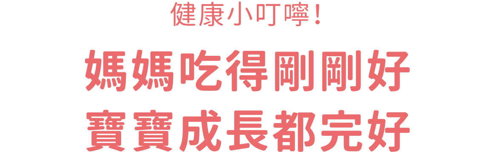
孕媽咪除了照顧自己之外，還要擔負起腹中寶寶健康發育所需要的大量營養。這些營養來源，必須依靠孕媽咪在日常飲食中充份攝取，即使可能會面對懷孕早期發生的食慾不佳、孕吐等狀況，提醒孕媽咪還是要保持正常的飲食，讓寶寶平安健康出生。
-
- 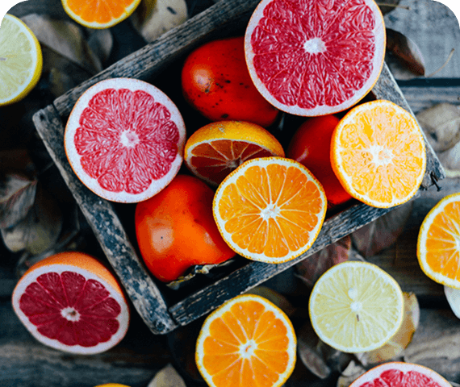
-
葉酸腦部神經發育大功臣
根據美國實證研究顯示，孕期攝取足夠葉酸可減少50-70%胎兒的腦及脊髓先天性神經管缺陷的發生，尤其在懷孕初期，葉酸扮演舉足輕重的角色，影響大腦許多運作能力。
缺乏葉酸可能導致紅血球製造不足而貧血，容易發生胎兒早產、出生體重低、生長遲滯、自發性流產、胎盤發育不良等問題。
其實，葉酸廣泛存在我們身邊許多食物中，充分攝取並不困難，包括︰菠菜、茼蒿等綠色蔬菜，肝臟、酵母、豆類、柑橘類水果，都是豐富的葉酸來源。
-
-
鐵質孕期吸收增加、提升攝取量
孕媽咪因體內紅血球數目增加，鐵質的吸收比平常增加3倍，須加強攝取。當孕期進入第25周以上時，為因應生產大量出血，及預先儲存在胎兒體內，以供應寶寶在出生後六個月還有足夠鐵質持續成長，每天應攝取45毫克。
如攝取不足，可能造成生產時的併發症，並對胎兒的腦部與精神症狀造成不良影響。富含鐵質的食物，包括︰鵝肉、鴨肉、海鮮、紅肉、肝臟、深色蔬菜(莧菜、甜豌豆、紅鳳菜等)，為幫助身體吸收鐵質，要多吃含維生素C食物，並避免與含咖啡因食物一起食用，降低鐵質吸收。
-
-
- 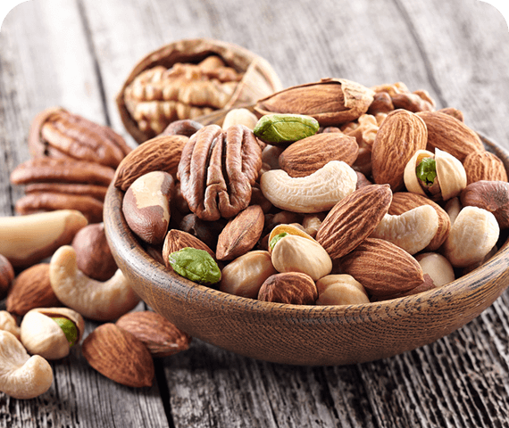
-
維他命B群維持能量、減少孕吐不適
攝取足夠B群有助於孕媽咪維持能量正常代謝，還能幫助抑制噁心嘔吐，減少孕吐不適感。到懷孕晚期，維生素攝取量必須跟著身體所需增加。
其中B12的缺乏，會造成胎兒的神經管缺陷，素食媽咪特別提高警覺，可從天然食物中攝取，亦可透過市面孕婦專用綜合維他命補充劑，彌補飲食中的不足。
B1食物來源包括:堅果、瘦豬肉、肝臟等，B2則於乳製品及強化穀類最豐富，B6存在各種肉類和全穀類中，攝取B12要多吃肝臟和肉類。
-

-
鈣讓媽媽、寶貝骨骼都壯壯
人體骨骼與牙齒構成的重要營養元素就是鈣，在懷孕初期，媽媽身體會自行調整提高鈣質吸收率，將鈣質儲存在媽媽骨骼內，讓懷孕後期可以提取使用。
建議孕婦每日攝取1000毫克的鈣質，當孕媽咪鈣質攝取不足時，須從母體骨骼和牙齒中游離出鈣質，供應腹中寶寶骨骼發育所需，可能在孕期間導致血壓上升，媽媽也很容易罹患骨質疏鬆症。
應多攝取含豐富鈣質的食物，包括︰芥藍、黑芝麻、低脂牛奶、乳製品、豆腐、小魚干、深綠色蔬菜。
雖然強調孕期飲食要保持多元與均衡，嘗試各類食物，但也要提醒孕媽咪，以下幾類食物要忌口減少攝取，才能平安度過人生最辛苦、卻也最寶貴的懷孕時期。
-
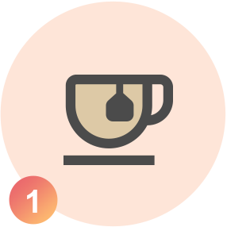
菸、酒、咖啡、濃茶
-
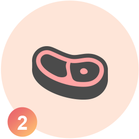
脂肪含量過多的食物
-
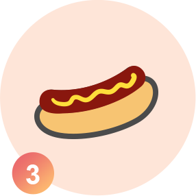
煙燻加工食物
-
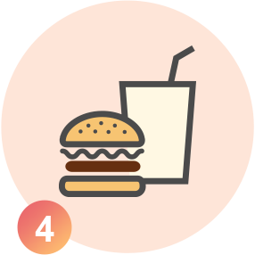
空熱量食物(速食、披薩、糖果、汽水等)
從懷孕至生產後，媽媽要面對孕期間身體一連串變化，緊接著又要負擔哺育孩子的沉重壓力，導致情緒起伏較不穩定，胃口也跟著改變、無所適從、壓力太大更增加早產的風險。這段日子，身為媽媽最親密的支持力量，準爸爸除了成為媽媽精神上堅實的依靠外，也要積極參與懷孕及分娩過程，在各方面成功扮演另一半的最佳得力助手，讓媽媽一路放寬心，健康平安的順產。
產前全程陪伴，照顧、安撫與學習
懷孕不只是媽媽的事，準爸爸要能設身處地著想，和準媽媽牽手輕鬆漫步，走向人生另一個階段，享受甜蜜的負擔，未來更幸福。以下提供方向給準爸爸參考：
-
陪同產檢：提醒並陪伴孕媽咪定期前往醫院作產檢。
-
一起學習：一同參與產前、生產與產後哺育課程，降低媽咪心理不安感。
-
一同運動：每天飯後一起去公園散步半小時。待孕吐緩解後，再安排肌力課程。
-
心情紓壓：與媽咪多聊天，分享心情、紓解懷孕的辛苦。
-
均衡營養：開始學做菜，為媽咪準備想吃的食物，提振食慾，營養更完整。
-
拒二手煙：戒菸好機會，孕婦長期曝露二手菸環境，會增加新生兒過敏機率。
-
幫忙家事：別讓媽咪過於勞累，保持身體輕鬆。
-
待產準備︰一起準備入院待產時所需用品。
-
疫苗施打：切記在懷孕第28-36週時，帶著媽咪接種百日咳疫苗保健康。
產後注意媽咪情緒，分攤育兒壓力
產後是個全新的開始，也是一個全新挑戰。產後身體虛弱又要耗費體力照顧寶寶，媽咪的壓力難以言喻，新手爸爸此時需體諒媽咪，盡量以行動協助並用心關懷，兩人同心協力共享寶寶成長的喜悅。
-
產後憂鬱，注意媽咪狀況：產後媽咪常常會在生產3、4天後情緒低落，一般約產後2週內即會消失。但爸爸要特別留意，若媽咪憂鬱狀況持續兩週以上，請務必找醫師協助。
-
分擔育兒，讓媽咪多休息：新手爸爸要多給媽咪一些休息時間、補充睡眠、喘口氣、散步，並盡量積極分攤家事及照顧寶寶，例如家裡環境清潔、幫寶寶泡奶、換尿布、洗澡等，一起照顧寶寶增進感情。
-
關心健康，施打HPV疫苗：產後媽咪罹患子宮頸癌的機率比一般女性還要高，準爸爸記得提醒媽咪儘快施打HPV疫苗，保障健康。
準爸爸勇敢承擔，為準媽媽打造幸福的家，準爸爸們應把握媽咪最需要你的黃金9個月，讓兩人感情加溫，並和媽咪一起培養良好的飲食和運動習慣，讓未來更健康。有了準爸爸積極關心、陪伴、協助與照顧，準媽媽產前不擔心、產後輕鬆應對、快速恢復，懷孕生子圓圓滿滿。